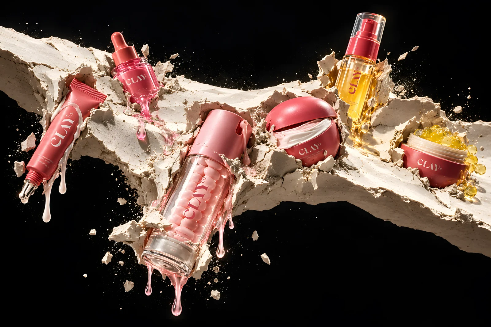
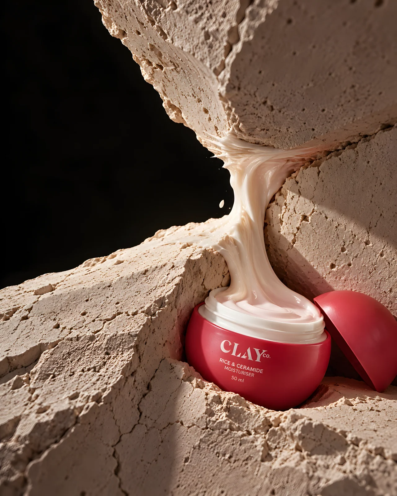
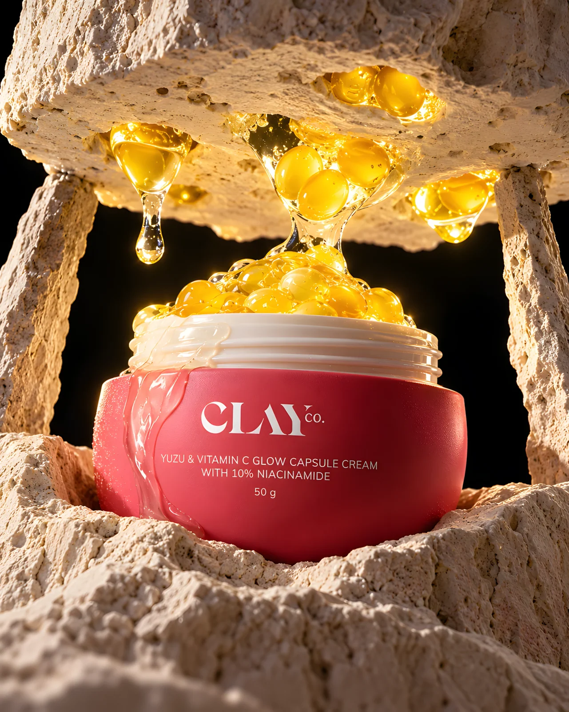
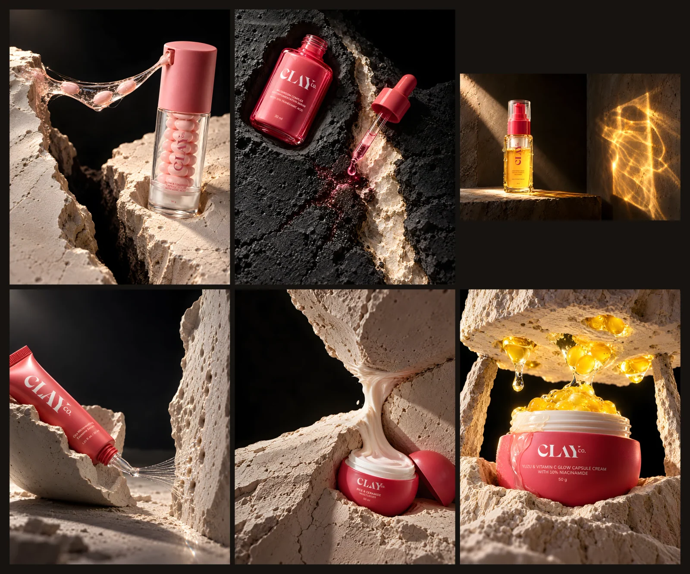

THE SURFACE ANSWERS
Clay Co.: six formulas meet a fractured mineral surface. Each contact leaves a different physical answer.

The idea
Clay becomes the common ground for the collection. A single fractured plane carries the range; cream binds its split, and golden capsules press through a translucent surface. The closing frieze shows how six products share one material world without repeating one product shot.
Making the world
Pale, handworked mineral texture, clear serum, dense cream, suspended capsules and hard grazing light hold the series together. These four selected images are AI-assisted, self-initiated concept visuals, not product photography or efficacy claims. Their 4K-class masters were enhanced from smaller generations or assembled from enhanced images; fine packaging text remains source-limited and needs brand verification for commercial use.
The series


